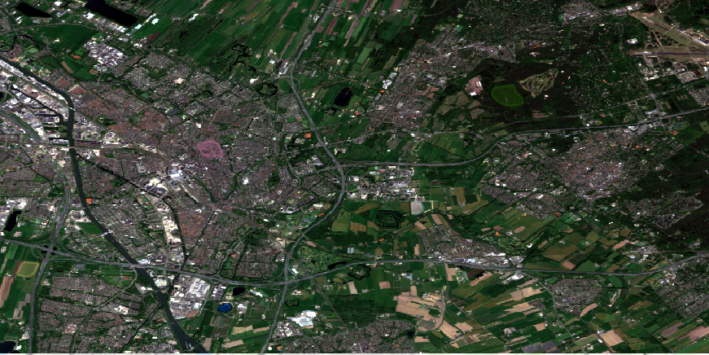
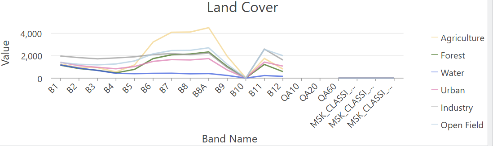
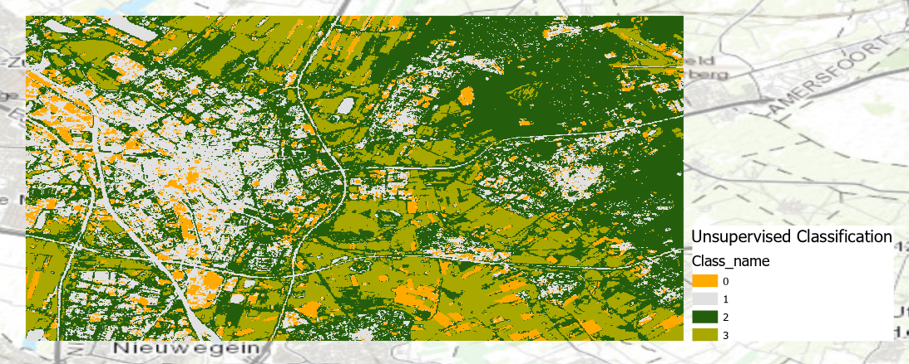
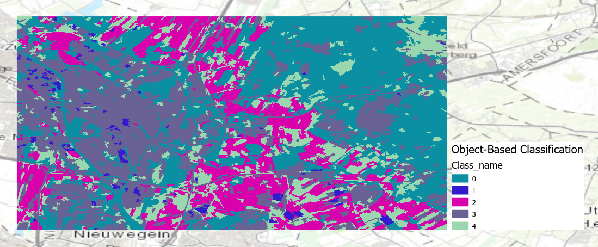
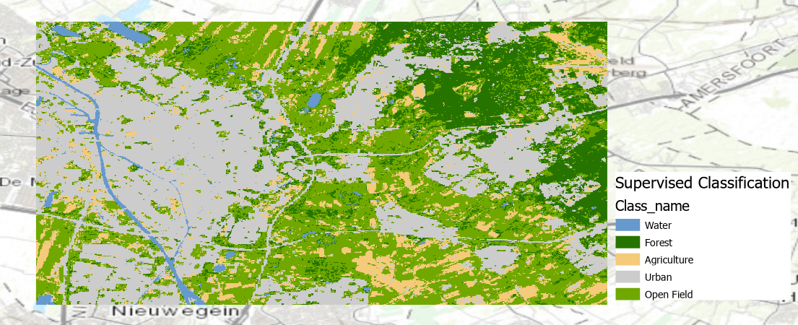
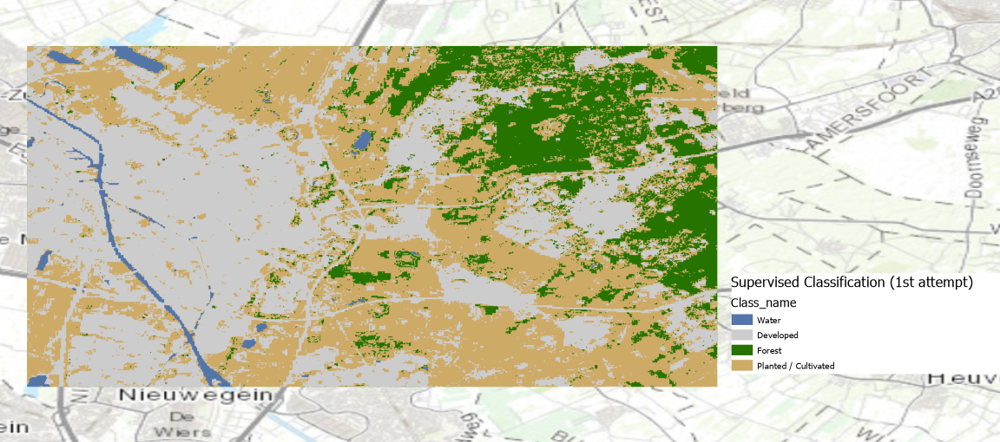
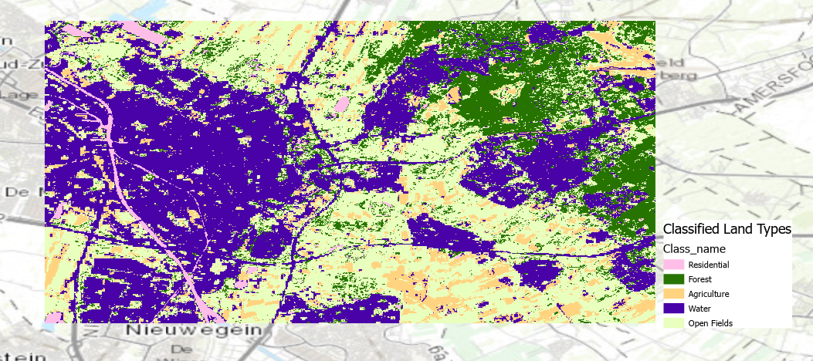

How does map classification work?

Land cover classification is the process of assigning a specific land class (water, urban, residential, forest) to each pixel of collected data. Satellite imagery, datasets with labels and auxiliary data are commonly used. For example, Sentinel 2 satellite data, which is also used for Vegetation Indices calculations. Land cover classification is a complicated and highly detailed process, which is precisely why automated land cover classification has been growing in popularity over the past few years. Instead of spending long hours individually classifying each pixel, the process has been automated using different Machine Learning Algorithms. There are two distinguishable types of classification: supervised and unsupervised.
Supervised classification is based on training data of each class that must be inputted before the classification takes place. Essentially, the system requires a training data sample of the spectral signature of the class “water”, which the algorithm then uses to classify other pixels as water.
On the other hand, unsupervised classification does not require prior training data, instead it analyzes clustering in order to group pixels into classes. This does require posthumous labeling of each group as the correct land cover class, as the algorithm cannot assign the groups it has created into specific land classes.
Each type has its positives and negatives. Generally speaking, supervised classification is slower and more involved, but offers more fine-grained and accurate results. It is best when previous training data and knowledge of all classes exists. Unsupervised classification is faster and less involved, but offers coarser results. It’s best employed to explore and research when it is unclear exactly what all the available classes or options are.

Creating a spectral signature chart
One of the first steps I took was to create a spectral profile through sampling different land cover types on the map. The sentinel composite chosen is from Utrecht Science Park. The spatial resolution of this specific sentinel composite is 18.36 meters in length and 17.72 meters in width per pixel. As can be seen within the graph, different land types have different values attached to them. These distinguishing spectral values is precisely what allows for the land classification process and analysis to occur.
Unsupervised Classification
I performed both the unsupervised and supervised land classification processes twice. For the unsupervised classification, I got similar results both times. The first part is pixel-based, which indicates that each pixel is individually classified based on its spectral signature. The second row is object based, which is when pixels are grouped into objects, and the overall spectral signature from that cluster is assigned a class and thus classified. It is based on the assumption that a house consisting of different “Urban” pixels is going to be entirely urban – it wouldn’t make sense to have a pixel classified as water in a house. Since this is an unsupervised process, it requires the user to classify the different groups it has created later on. It was interesting to note how the algorithm came up with 4 different classes – however, my previous issue of including the rivers and water sources as a part of the “Urban” class returned once again.

Unsupervised, Attempt 2 (Pixel)

Unsupervised, Attempt 2 (Object)

Unsupervised, Attempt 2 (Object), Alternative Color Scheme
Supervised Classification
For the supervised land classification process, I believe my results the second time were better. During my first attempt, I didn’t have enough proper samples for my training samples that I inputted, so the algorithm was unable to classify water as a separate class, for example. However, I made sure to take roughly 15-20 samples per each land type I chose the next time, and I do believe it helped make my results more accurate. Unlike the unsupervised algorithms, the supervised version can distinguish between water and urban areas, and didn’t make mistakes such as placing an agricultural area in the middle of Utrecht Center. Compared to my first attempt at a supervised classification, this attempt was a huge improvement.


Supervised, Attempt 1
Supervised, Attempt 2

Supervised, Attempt 2 - Alternate Color Scheme

NDVI
The color scheme I choose ranges from blue (representing water, as values under 0 in NDVI typically indicate bodies of water), to a light orange. I was attempting to create an NDVI indicator that would also accurately indicate where the urban areas are, as to create a sort of combination between NDVI and the other land use classification system maps. I would like this map to be readable in a practical sense. Therefore, healthy vegetation is indicated with darker green, while unhealthy vegetation is indicated by a lighter yellow color. This still stands out, and would allow for practical application. To avoid confusion, the grey represents urban buildings, in order to distinguish between vegetation and other sorts of landuse. The target audience, in this instance, would therefore be an average citizen, perhaps a farmer, but generally someone who would also benefit from distinguishing the entire overall picture – including vegetation health, but also the other aspects of an area such as location of urban development and bodies of water.
Reflection
Each of the methods had their own strengths and weaknesses. I believe I got my best, most accurate result from my second attempts at both methods of classification. The strength of the unsupervised method is that it doesn't require much input from the user to produce good results, however it still mixed up some land cover types in numerous ways, such as combining urban and water into one, or scattering some open field or agriculture pixels into the urban area. I did enjoy the level of detail, I felt as though the unsupervised version did a much better job at rendering the detailed star shapes of the forested area and the fort in Utrecht. While the supervised version did show the rings, it didn’t actually have quite the level of detail in the shape as the unsupervised version, which surprised me. The object version of the unsupervised version was also highly interesting, as it fragmented everything. I do believe this could be useful, particularly for spatial planning through indicating what sort of objects or sections already exist, but it does lose a lot of valuable detail. The supervised version was much more accurate when it came to these sorts of mistakes, it was able to more accurately decipher and classify land cover types. I did feel as though it lacked some variety in some locations, and it does look a bit too blocky to be visually appealing for the general public. I believe the supervised map would benefit from a 3D rendering addition, or a shadow DSM of some sort, in order to make it more textured and interesting. In general, I believe my second attempt at the supervised classification is likely my favorite – it is the most work, but it has the fewest mistakes. I did attempt to create a Confusion Matrix, but unfortunately ArcGIS Online couldn’t process it.